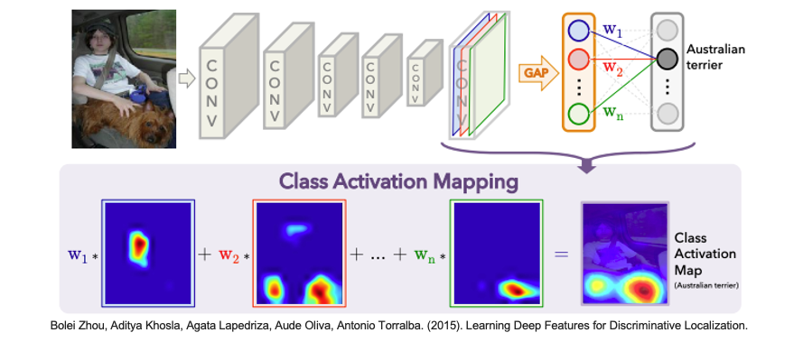
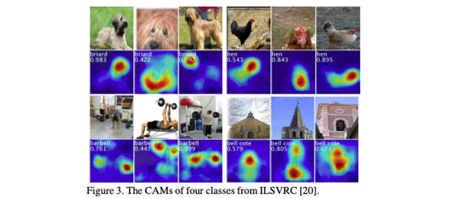

[Day 22] CAM-Based：如何解釋卷積神經網路
CAM（Class Activation Mapping）是一種用於解釋卷積神經網路（CNN）模型在圖像分類任務中的預測的技術。它的目的是生成一個視覺化的熱圖，以顯示模型在圖像中關注的區域，以及這些區域對於模型預測某一類別的貢獻。以下是近年來與 CAM 相關的變形方法的整理：
- CAM (Class Activation Mapping) (Zhou et al. 2015): 基本的CAM方法是用來解釋CNN模型的預測，通過將卷積層的特徵圖與全連接層的權重相結合，生成類別特定的熱圖，以顯示模型對於不同類別的注意力分佈。
- Grad-CAM (Gradient-weighted Class Activation Mapping) (Ancona et al. 2016): Grad-CAM建立在CAM的基礎上，使用梯度訊息來更準確地計算特徵圖上的權重。它通過將卷積層的梯度值與特徵圖相乘，生成熱圖，以視覺化模型對於不同類別的關注點。
- Grad-CAM++ (Chattopadhyay et al. 2017): Grad-CAM++是Grad-CAM的進一步改進版本，它引入了多尺度特徵圖的概念，以提高對於細微細節的解釋能力。它使用多個卷積層的特徵圖來生成更具細節的熱圖。
- Score-CAM (Haofan et al. 2020): Score-CAM是一種用於解釋模型預測的方法，它通過將通道的分數（score）和特徵圖相乘，生成類別特定的熱圖。它旨在提高CAM方法的性能，並減少噪聲。
在今天的內容中，將介紹 CAM 和 Grad-CAM 的差別，最後使用 TensorFlow 來示範如何運用 Grad-CAM 方法來解釋 CNN 模型。
CAM
CAM 在 2015 年被提出，論文名稱為 Learning Deep Features for Discriminative Localization，它的主要概念是將 CNN 的最後一個卷積層的特徵圖之後接上全局平均池化層(Global Average Pooling Layer)與全連接層的權重相結合。首先計算每個類別的權重，這些權重是全連接層的權重與卷積層的特徵圖相乘後的總和。接著將這些權重應用到卷積層的特徵圖上，生成一個類別特定的熱圖。這個熱圖顯示了對於某一特定類別，圖像的不同區域的相對重要性。最後熱圖經過適當的正規化處理，以確保它可以被視覺化並與原始圖像尺寸對應。

全局平均池化（Global Average Pooling）是一種用於卷積神經網路（CNN）中的特徵映射的操作。它通常用於卷積神經網路的最後一層，以幫助縮減特徵圖的維度並生成一個固定大小的輸出，以供後續的分類或回歸任務使用。全局平均池化的過程非常簡單，以下用一張特徵圖為例，假設 pool size 4*4 也就是對整張圖做平均得到 24 這就是一個通道(一張特徵圖) GAP 後的結果。

簡單來說全局平均池化做法屬於空間維度的一種特徵壓縮，因為這個實數是根據所有特徵值計算出來的，所以在某種程度上具有平均感受野，最後保持通道數不變，所以最後輸出大小為 1x1xC：

經過全局平均池化（GAP）後，我們得到了一個包含權重 w 的像素陣列。這些權重 w 反映了每張特徵圖對於最終預測某個類別的重要性。更大的權重值表示相應特徵圖對於該分類的貢獻更大。

為了更好地理解這些權重，我們可以將它們應用於整張特徵圖上的每個像素點，然後進行疊加。這樣做的好處是我們可以根據每張特徵圖的重要性來集中關注不同的區域。如果某特定分類的權重 w 很大，那麼該分類所對應的特徵圖將在進行疊加時具有更大的影響。相反，權重接近於0的特徵圖對於最終的關注度較低，因此它們被視為不太重要的部分。

此方法確實為解釋 CNN 模型的預測提供了重要的基礎，但它存在一個明顯的限制，即受到了網路架構的限制。因為如果要使用 CAM 解釋，在 CNN 架構當中最後一層一定要接上 GAP 層。隨後的方法，如Grad-CAM和其變種，試圖克服這些限制，使解釋性方法更具通用性，適用於各種深度學習模型。
Grad-CAM
從 CAM 的介紹中，我們了解到實現 CAM 所需的一個關鍵條件是必須加入全局平均池化（GAP）層。然而這種要求在某種程度上限制了網路架構的自由度，因為模型必須包含 GAP 層才能使用 CAM。更重要的是，如果我們堅持要求模型的最後一層必須是GAP層，這可能會影響模型的準確性。因此 Grad-CAM 在這方面解除了這種限制，它出自於這邊論文 Grad-CAM: Visual Explanations from Deep Networks via Gradient-based Localization 。使用 Grad-CAM 我們可以對一般的 CNN 架構進行解釋，而不需要強制要求模型的最後一層必須是 GAP 層。這意味著我們可以更靈活地應用 Grad-CAM 來獲得 CNN 對輸入圖片的關注區域，而無需對模型進行大幅度的修改，同時不會明顯影響模型的準確性。
從下圖中可以清楚地看到，不論是全連接層、RNN、LSTM，或者更複雜的網路模型，都可以透過 Grad-CAM 取得神經網絡的分類關注區域熱力圖。

簡單來說 Grad-CAM 的關鍵在於能夠透過反向傳播計算用於 CAM 的權重 𝑤。我們可以針對每個特徵圖進行反向傳播，計算梯度的平均值，以獲得相對應的權重。最後，將這些權重（𝑊₁, 𝑊₂, …, 𝑊𝑛）與特徵圖相乘，然後進行總和，就可以觀察到不同位置對輸出的影響。

CAM-Based 方法實作 (Grad-CAM)
今天的範例將使用 Xception 預訓練模型來示範如何透過 Grad-CAM 解釋模型推論結果。Xception 的名稱是由 Extreme Inception 衍生而來，因為它基於 Inception v3 架構的概念，並對一些地方進行了極端擴展和改進。
Xception 論文：Xception: Deep Learning with Depthwise Separable Convolutions
載入預訓練模型(Xception)
首先使用 TensorFlow 載入 Xception 模型，將輸入張量(tensor)連接到預訓練的神經網路層，imagenet 表示使用在 ImageNet 資料集上預訓練的權重。include_top=True 表示輸出包括模型的最後分類層(全連接層)，此模型通常用於影像分類任務。
from tensorflow.keras.applications.xception import Xception from tensorflow.keras.layers import Input # 建立一個輸入張量，指定圖像大小為224x224（RGB色彩通道） input_tensor = Input(shape=(224, 224, 3)) # 建立 Xception 模型 model = Xception(input_tensor=input_tensor, weights='imagenet', include_top=True)
接著載入一張圖像，對其進行預處理。其中 np.expand_dims() 的目的是將圖像轉換為模型可接受的維度，這裡將圖像包裝在一個批次(batch)中，通常是一個批次只有一張圖像。最後使用 Xception 模型的預處理函數 preprocess_input() 來處理圖像，以確保圖像的數值範圍和格式符合模型的要求。
import numpy as np import tensorflow as tf from tensorflow.keras.applications.xception import preprocess_input # 載入圖像 image = tf.keras.utils.load_img('./dataset/cat_dog.jpg') image = tf.keras.utils.img_to_array(image) # 將載入的圖像轉換為數組形式 x = np.expand_dims(image.copy(), axis=0) # 將圖像轉換為模型可接受的維度 # 預處理圖像 x = preprocess_input(x)
確認輸入影像都完成處理過後，就可以使用已建立的 Xception 模型進行圖像分類預測，返回分類機率。最後再使用 decode_predictions() 解析取得預測結果，並取得類別名稱和相對應的預測機率。
from tensorflow.keras.applications.xception import decode_predictions # 進行圖像分類預測 pred_proba = model.predict(x) # 返回分類機率 # 解析預測結果 pred_class = decode_predictions(pred_proba, top=1)[0][0] # 解析取得預測結果
我們先來看看模型預測的結果。雖然這張影像同時有一隻貓和狗，但模型在神經網路中先抓取到狗的重要特徵(例如：鼻子、嘴巴)，因此最終模型預測 bull_mastiff(鬥牛獒)，該類別的機率值有 48%。
import matplotlib.pylab as plt plt.imshow(image.astype('uint8')) plt.axis('off') predicted_class_name = pred_class[1] _ = plt.title(f"Prediction: {predicted_class_name} {pred_class[2]:.2f}")
Grad-CAM 實作
這段函式主要用於生成Grad-CAM熱圖，以視覺化深度學習模型對於輸入圖像的預測結果的解釋性。首先建立一個新的模型 grad_model，該模型接受相同的輸入圖像，但同時輸出最後一個卷積層的輸出和整個模型的預測結果。這是為了能夠計算特定類別對於最後一個卷積層的梯度。接下來，使用 TensorFlow 的 GradientTape 來記錄計算梯度。它計算了模型對於輸入圖像的預測，同時記錄了對應於特定類別的分類神經元相對於最後一個卷積層輸出的梯度。然後計算這些梯度的平均強度 pooled_grads，並取得一個向量做為權重，每個元素對應於最後一個卷積層的特徵圖通道。接著將最後一個卷積層的輸出與 pooled_grads 做點積，這個操作強調了對於特定類別預測重要的特徵圖區域。得到的結果是一個熱圖，其中每個像素值表示相應位置對於該類別預測的重要性。最後為了視覺化，將熱圖的值正規化為介於0和1之間，以便更容易理解和視覺化。
def make_gradcam_heatmap(img_array, model, last_conv_layer_name, pred_index=None): # 建立一個模型，同時輸出最後一個卷積層和整個模型的預測結果 grad_model = tf.keras.models.Model( model.inputs, [model.get_layer(last_conv_layer_name).output, model.output] ) # 計算對於輸入圖像的預測類別，相對於最後一個卷積層的梯度 with tf.GradientTape() as tape: last_conv_layer_output, preds = grad_model(img_array) if pred_index is None: pred_index = tf.argmax(preds[0]) class_channel = preds[:, pred_index] # 輸出分類神經元相對於最後一個卷積層的輸出特徵圖的梯度 grads = tape.gradient(class_channel, last_conv_layer_output) # 這是一個向量，其中每個數字都是特定特徵圖通道上的梯度的平均強度 pooled_grads = tf.reduce_mean(grads, axis=(0, 1, 2)) # 將特徵圖乘以權重，等於該特徵圖中的某些區域對於該分類的重要性 last_conv_layer_output = last_conv_layer_output[0] heatmap = last_conv_layer_output @ pooled_grads[..., tf.newaxis] heatmap = tf.squeeze(heatmap) # 然後將所有通道相加以獲得熱圖 # 為了視覺化，將熱圖正規化0~1之間 heatmap = tf.maximum(heatmap, 0) / tf.math.reduce_max(heatmap) return heatmap.numpy()
接下來我們實際將影像、模型以及最後一層卷積的名稱餵入我們剛剛建立的函式，然後繪製出一張熱圖。在這篇文章中，我們使用的是 Xception 模型架構，其最後一層卷積層的名稱為 block14_sepconv2_act。如果不知道最後一層的名稱是什麼，可以透過 model.summary() 來查看模型的結構，然後尋找最後一個 Conv2D 層的名稱。

# 產生 class activation heatmap last_conv_layer_name = "block14_sepconv2_act" heatmap = make_gradcam_heatmap(x, model, last_conv_layer_name) # 顯示 heatmap plt.matshow(heatmap) plt.show()
由於最後一層的卷積特徵圖大小為 (None, 7, 7, 2048)，因此最後計算出來的熱圖大小為一張將過正規化的 7*7 像素大小的熱圖。

最後這段程式是將剛剛得到的熱圖與原始影像進行疊合視覺化結果。此函式接受四個主要的輸入參數：
- img_path: 輸入圖像的路徑，這是要解釋的圖像。
- heatmap: Grad-CAM 熱圖，表示模型對圖像中不同區域的關注程度。
- cam_path: 輸出的熱圖圖像檔案的路徑。
- alpha: 控制疊加熱圖和原始圖像的透明度。
import matplotlib.cm as cm from IPython.display import Image, display def save_and_display_gradcam(img_path, heatmap, cam_path="cam.jpg", alpha=0.4): # 載入原始圖像 img = tf.keras.utils.load_img(img_path) img = tf.keras.utils.img_to_array(img) # 將熱圖重新縮放到0-255的範圍 heatmap = np.uint8(255 * heatmap) # 使用Jet色彩映射將熱圖上色 jet = cm.get_cmap("jet") # 使用Jet色彩映射的RGB值 jet_colors = jet(np.arange(256))[:, :3] jet_heatmap = jet_colors[heatmap] # 創建帶有RGB色彩的熱圖圖像 jet_heatmap = tf.keras.utils.array_to_img(jet_heatmap) jet_heatmap = jet_heatmap.resize((img.shape[1], img.shape[0])) jet_heatmap = tf.keras.utils.img_to_array(jet_heatmap) # 在原始圖像上疊加熱圖 superimposed_img = jet_heatmap * alpha + img superimposed_img = tf.keras.utils.array_to_img(superimposed_img) # 儲存疊加後的圖像 superimposed_img.save(cam_path) # 顯示Grad CAM display(Image(cam_path))
save_and_display_gradcam('./dataset/cat_dog.jpg', heatmap)
最後我們就能得到一張完整的 Grad-CAM 解釋圖了。從圖中可很明顯知道模型辨識一隻狗是關注影像中的哪一個特徵作為判斷依據。

如果想透過第三方套件進行 CNN 模型解釋也可以使用 tf_explain，它是一個針對 TensorFlow 深度學習模型解釋的 Python 套件。內建提供了多種方法，並透過熱力圖可以用來觀察模型是否學到關鍵特徵。